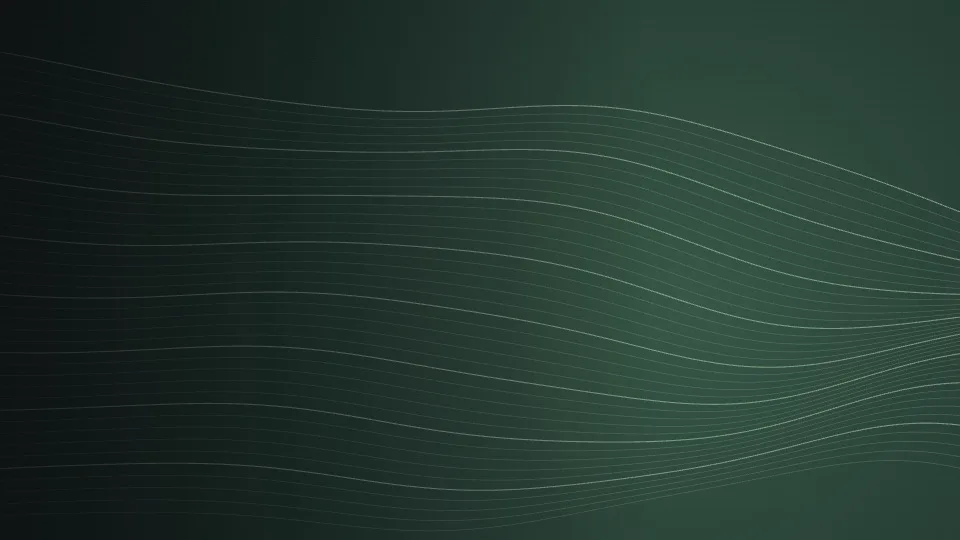
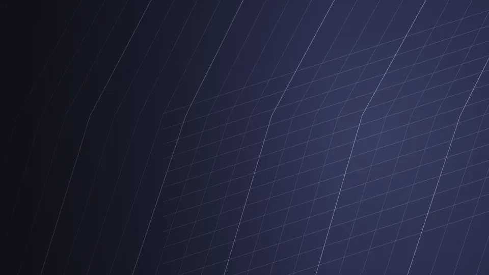
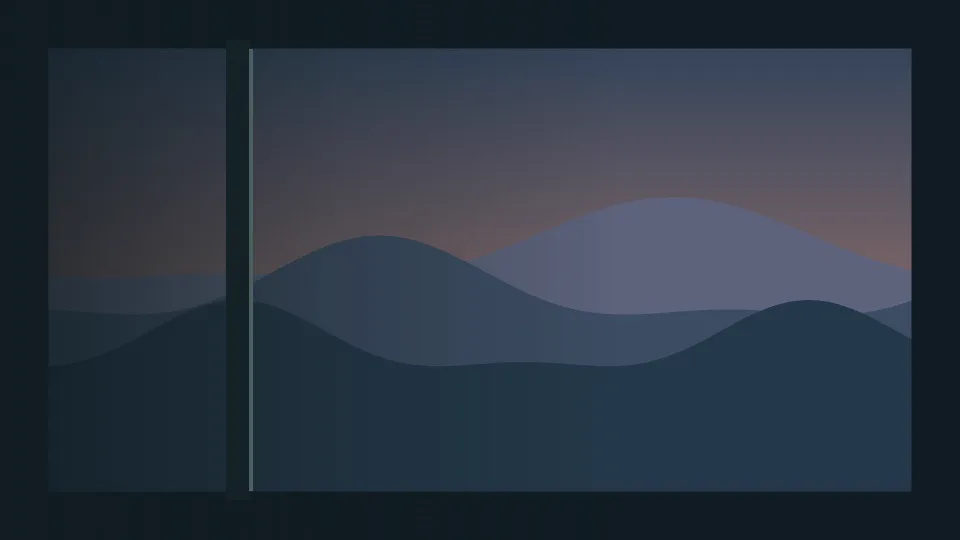
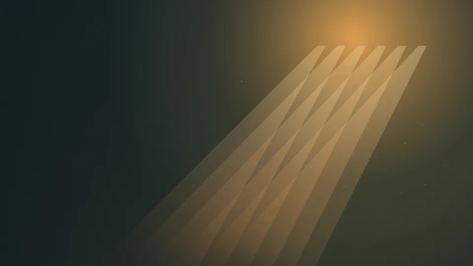
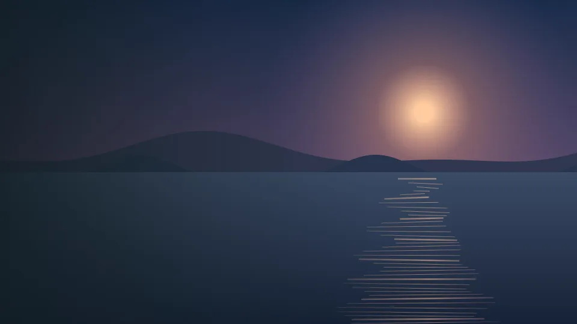
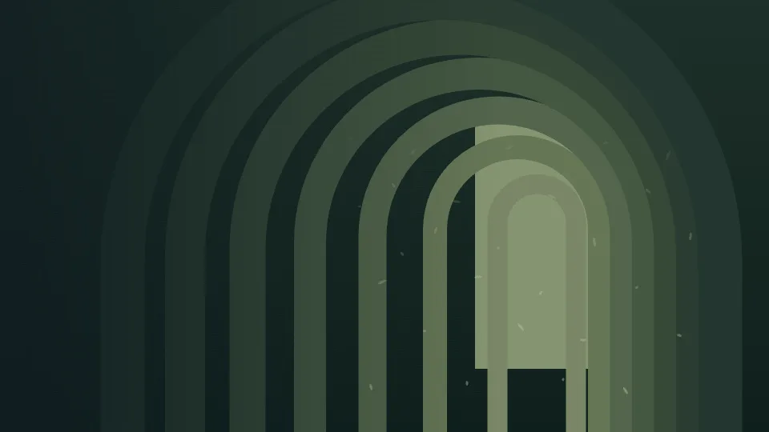

Motion loops
Preview an original loop for your next background.
7 loops
-

Tidal contours
GeometryCurved contour lines on a dark ground.
-
Amber reflection
LightWarm bands of light across a dark surface.
-

Oblique lattice
GeometryA tilted grid with soft violet edges.
-

Moving landscape
LightA landscape seen through overlapping panes.
-

Window light
LightA bright window reflected across a surface.
-

Water reflection
LightSlow bands of reflected light on water.
-

Layered arches
GeometryNested arches with a slow change in depth.
No matching loops. Choose another subject or clear the search.